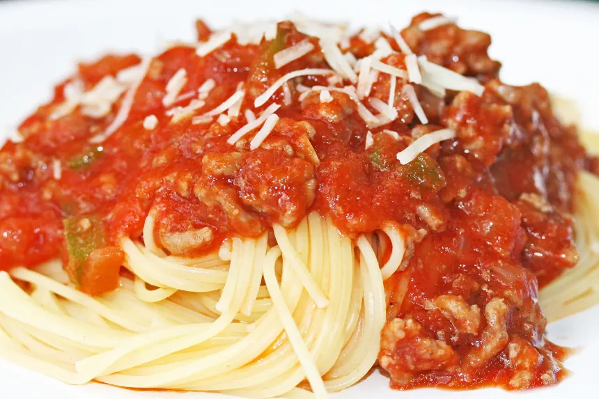

Back to Homepage
Spaghetti Recipe

A simple spaghetti dish (Recipe Source)
Ingredients:
- 1x onion
- 1x bell pepper
- 29.58 ml of garlic powder
- 44.37 ml of butter
- 4.92 ml of salt
- 4.92 ml of pepper
- 2x (850.48 g) cans of tomato sauce
- 453.59g box of spaghetti noodles
- 453.59-680.38 g of hamburger meat
Steps:
- Chop the onion and bell pepper to small pieces.
- On medium heat melt the butter and sautee the onion and bell peppers.
- Add the hamburger meat and cook until meat is well done.
- Add the tomato sauce, salt, pepper and garlic powder.
- Salt, pepper and garlic powder can be adjusted to your own tastes.
- Cook noodles as directed.
- Mix the sauce and noodles if you like, I keep them separated.